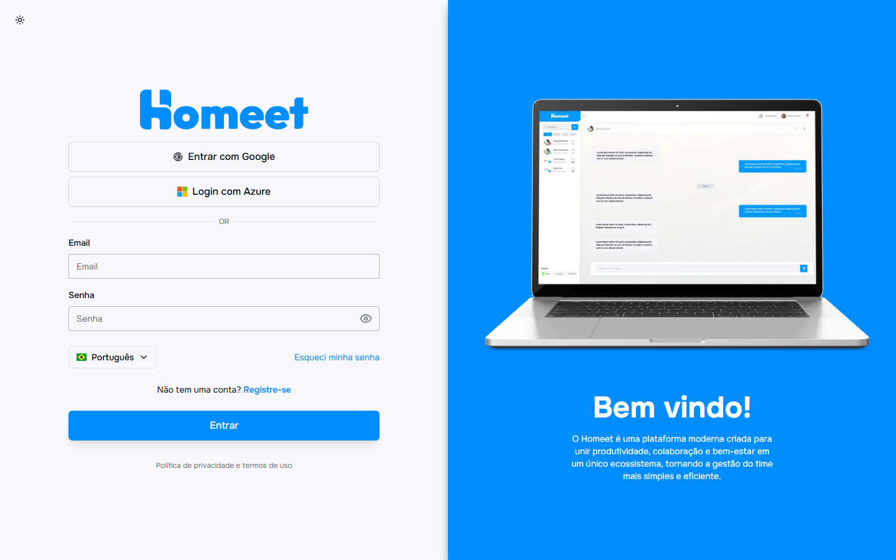
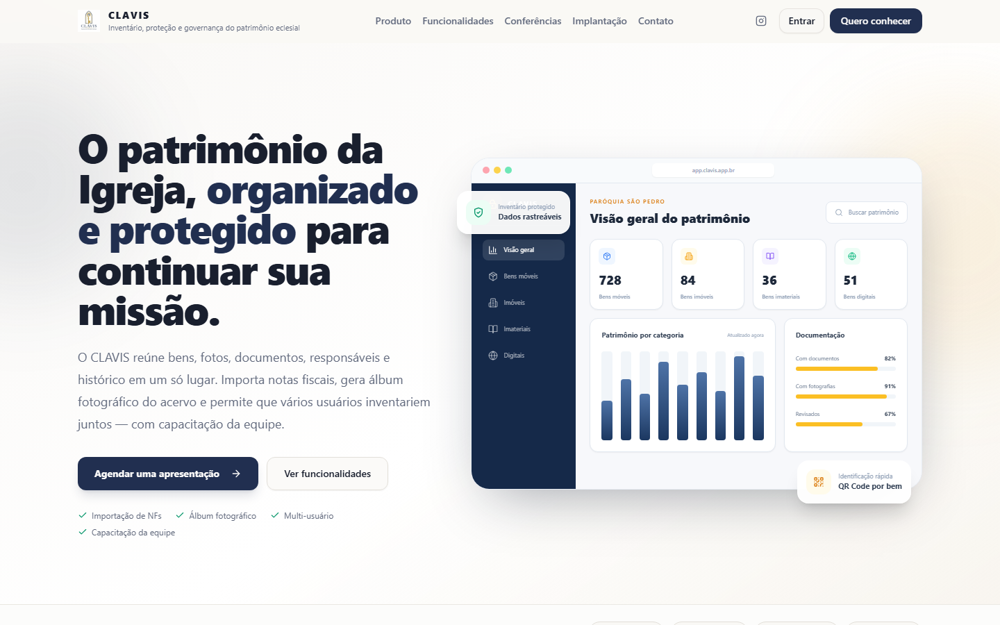
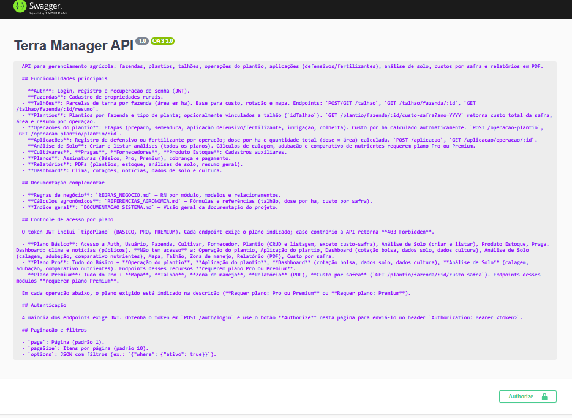
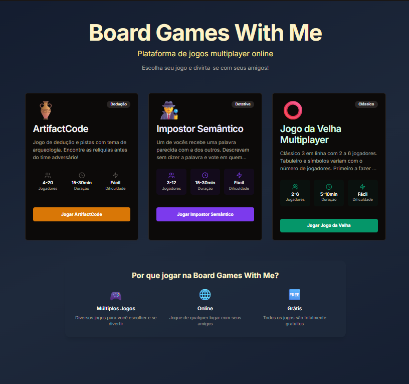
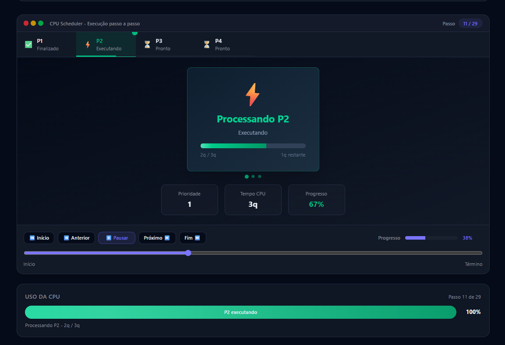
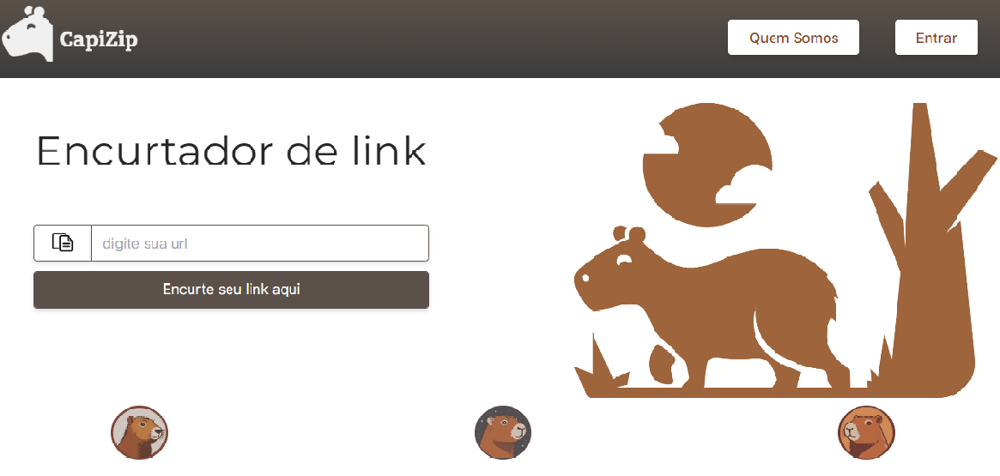
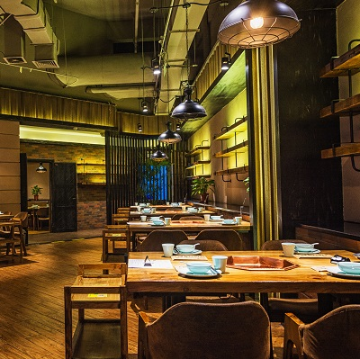
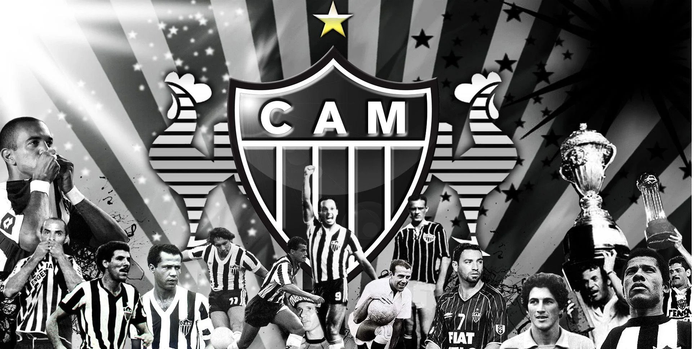
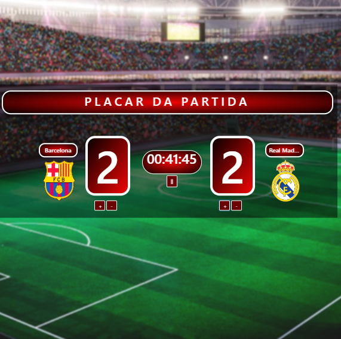
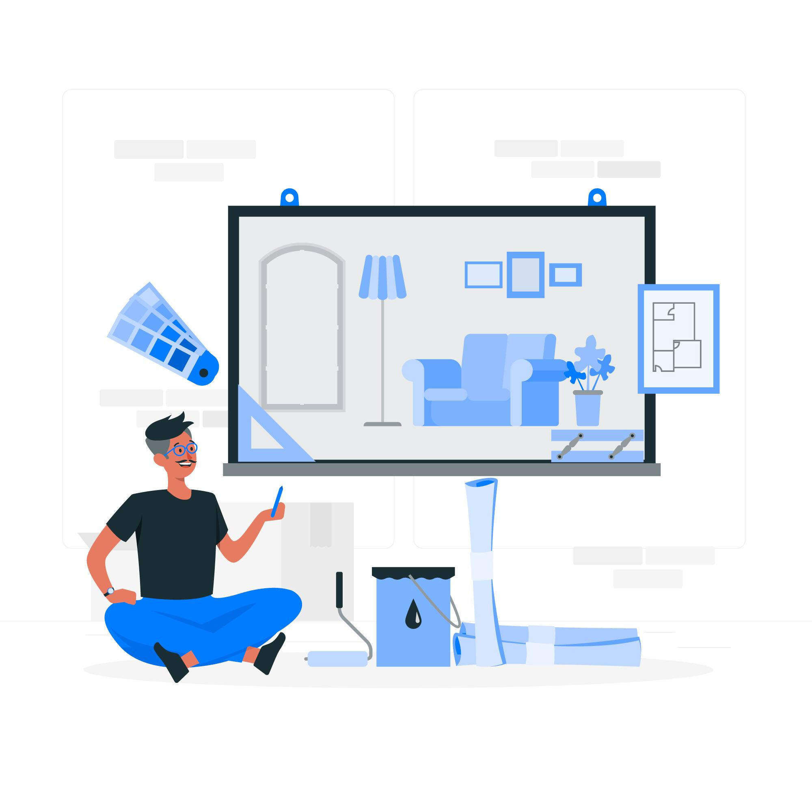

- Início
- /
- Projetos
Projetos
Projetos em que trabalhei nas empresas e projetos pessoais e acadêmicos. Os projetos de empresa estão marcados com o nome dela: são produtos da empresa, e a descrição mostra a minha parte no desenvolvimento.
 Code Square
Code Square
Cape Cod Gestão: ERP e CRM com IA
Projeto da Code Square para o cliente Carros Auto Mall
Atuei no ERP automotivo com módulo de garagem e na integração do CRM com atendimento via WhatsApp, usando LangChain para apoio de IA e análise de relatórios.

Code SquareHomeet CRM
Projeto da Code Square · em desenvolvimento
Atuo no desenvolvimento do módulo de CRM da plataforma Homeet: clientes e leads, funil comercial e tarefas em Kanban.
de Concessões Rodoviárias
Sistema Regulatório de Concessões Rodoviárias
Projeto da RTech Solutions
Atuei no desenvolvimento do sistema multitenant: integração com a API do Outlook que transforma e-mails em solicitações, obrigações contratuais, chat e tramitação de documentos entre áreas.

Projeto pessoalCLAVIS
Inventário do patrimônio de paróquias
Cadastro de bens com fotos e documentos, importação de NF-e, QR Code por bem, álbum em PDF e vários usuários com permissões por papel.
CM LabAI
Ferramentas de IA generativa
Criação de textos, transcrição de áudio e geração de conteúdo usando modelos de linguagem.

Pesquisa IFNMGAPI Terra Manager
API de gestão e planejamento agrícola, criada em projeto de pesquisa no IFNMG, com documentação interativa.

Projeto pessoalCD GameZone
Plataforma com vários jogos online multiplayer para jogar com amigos direto no navegador.

Projeto pessoalCPU Scheduler
Simulador visual de algoritmos de escalonamento de processos, com dashboard interativo.

IFNMGEncurtador de links com rastreamento
Gera URLs curtas e mostra métricas de cada clique: IP, cidade, data, hora e cliques por período do dia.
Serviços Prestados
Sistema de cadastro e controle de serviços prestados, do back-end à interface.

IFNMGCardápio Online
O cliente escolhe os produtos, monta o carrinho e envia o pedido direto pelo WhatsApp.
 Projeto pessoal
Projeto pessoal
Quiz: herói ou vilão?
Quiz interativo no estilo BuzzFeed que descobre se você é herói ou vilão.

Projeto pessoalNotícias do Atlético Mineiro
Landing page de notícias com carrossel de destaques.

Projeto pessoalCronômetro e placar
Cronômetro e placar para acompanhar partidas de futebol.

AcadêmicoMonitoria de Algoritmos
Formulário de inscrição para a monitoria de algoritmos.
Lista de tarefas
Controle simples de tarefas do dia a dia.
Princípios éticos na TI
Trabalho acadêmico publicado como réplica do layout do G1.
Repositórios no GitHub
Projetos de back-end, APIs e estudos com código aberto.